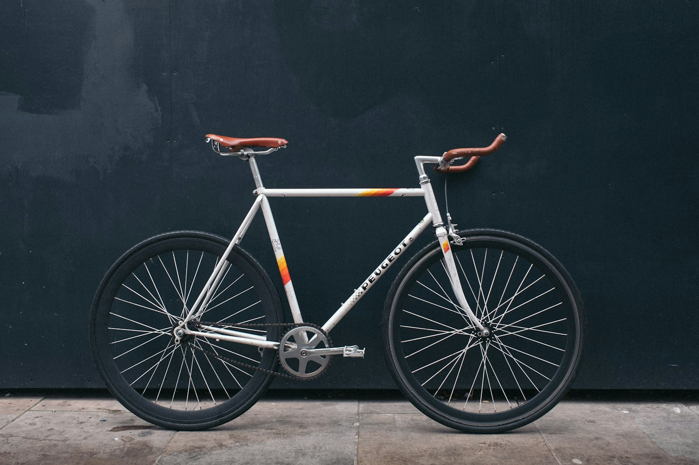

The quick fix
from $20
Flat repair, brake adjustment, or a single nagging issue. The small things that keep you rolling.
- One-issue diagnosis
- Safety look-over
- Clear estimate before work
YOUR NEIGHBORHOOD PIT STOP
From the everyday commuter to the long-way-home rider. Thoughtful repairs, honest advice, and a bike that feels like yours again.
Find your tune-up ↗
01 / ON THE BENCH
Illustrative service pricing. We inspect first, explain the work, and get your approval before turning a wrench. Parts are extra.
from $20
Flat repair, brake adjustment, or a single nagging issue. The small things that keep you rolling.
$85
A fresh start for your trusted companion. Ideal for a bike that rides well but needs some love.
from $160
For dusty garage finds and season-opening adventures. A deeper service with room to talk details.
02 / A WORKSHOP, NOT A SALES PITCH
We like scuffed frames, well-loved saddles, and the kind of bike that gets you somewhere.
Eastbank is a fictional independent repair shop imagined for Elizabeth City. The idea is simple: make practical bicycle care feel approachable. Bring your questions. Tell us what feels off. We’ll explain the options in plain English.
E-bike mechanical work by assessment. No battery or motor repairs. No suspension rebuilds.
03 / BEFORE YOU ROLL IN
In this concept, walk-in assessments are welcome during shop hours. A bench reservation is the best way to plan a tune-up. All scheduling here is demonstration only.
A routine tune-up would usually take two to four workshop days, depending on parts and workload. The final timing would be confirmed after inspection.
Absolutely—the concept welcomes older bikes. A safety assessment comes first; sometimes replacement parts or repairs may cost more than expected, and those options would be discussed upfront.
04 / LET’S GET YOU ROLLING
Tell us what you ride and what it needs. This demo creates a local confirmation only.
River district · Elizabeth City, NC
Concept location — no physical storefront
Tue–Fri 10–6 · Sat 9–2
Sun–Mon: out riding
hello@eastbank.example
(252) 555-0109 · fictional number